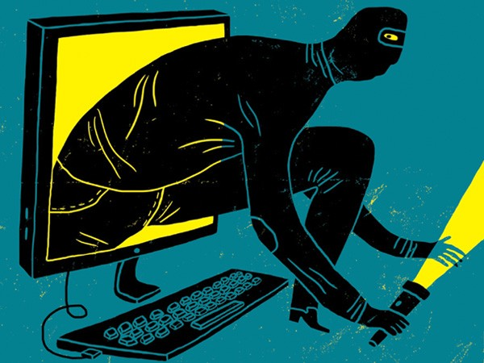
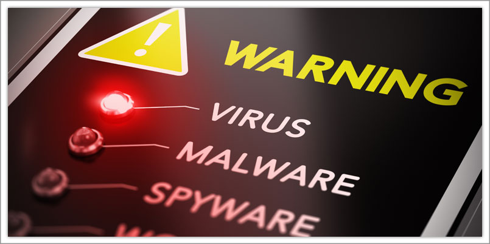
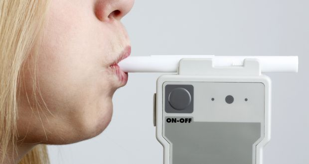
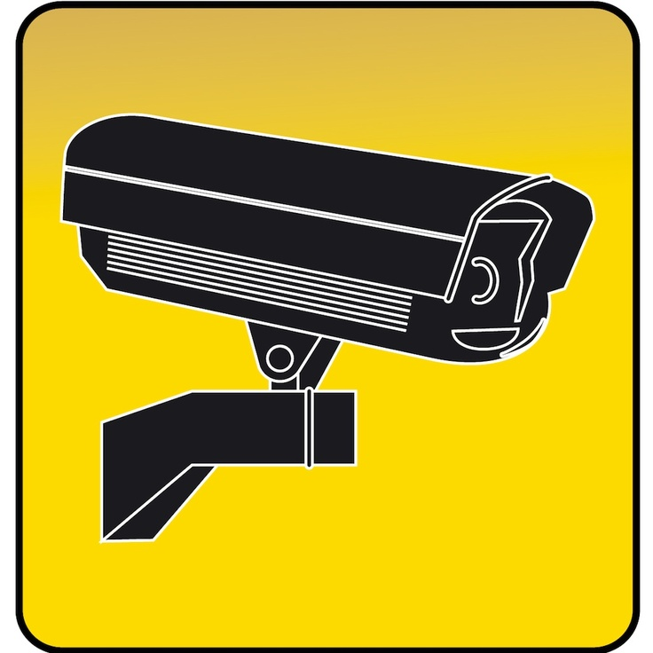
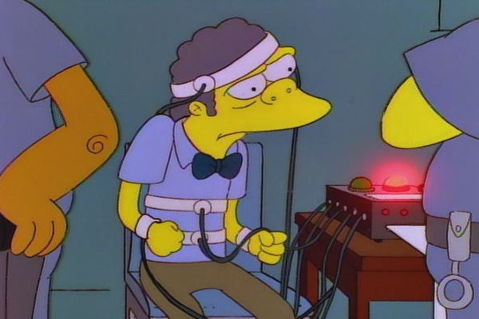
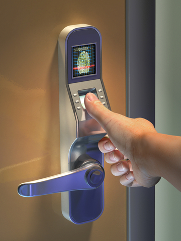
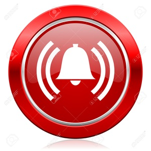
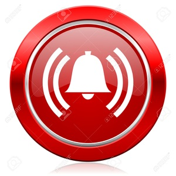

Crime and crime prevention
Due to the usage of ICT by many people, criminals now target people who carry out transactions and other tasks over the internet. Few such cases are money theft, phishing, pharming, robbery of information or damaging others computers by using viruses.


(place cursor to zoom)
Prevention of crime by the police includes a lot of ICT devices and/or softwares. Databases now store large amounts of information about suspects, victims, criminals and normal civilians which helps the police a lot.
Even day-to-day crimes like drunken driving, robbery and similar cases are also handled. Police nowadays use breathalysers to catch hold of drunken drivers, CCTV (closed-circuit television)for catching robbers or to know what happened exactly at a crime scene at a specific time. Interrogating criminals is made easier and police can now find out whether the suspect is lying by using lie-detectors.



(place cursor to zoom)
Biometric scanners or fingerprint scanners and voice recognition systems are now placed in order to prevent imposters from gaining information or other objects. Alarms are also set to either summon the police or to alert the people around the area.

 
(place cursor to zoom)

(place cursor to zoom)